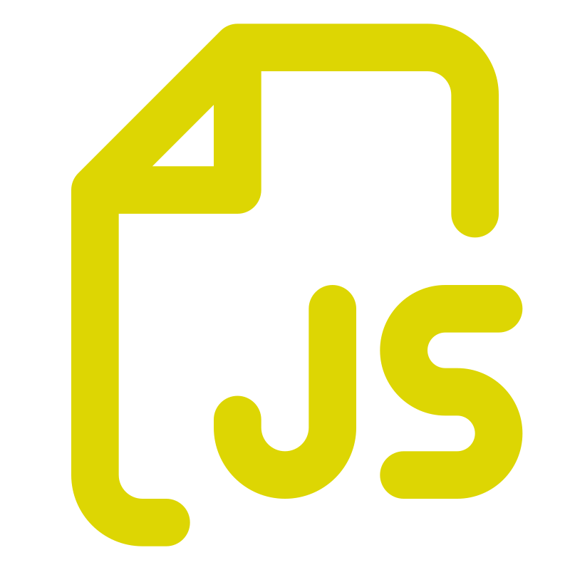

HTML5
(Lenguage de Marcas de Hypertexto)
El documento que lee el navegador está escrito en un lenguaje de
marcado llamado HTML, que son las siglas de HyperText Markup Language,
o lo que es lo mismo, un lenguaje de etiquetas que permite incluir o
hacer referencia a todo tipo de información.
CSS3
(Cascading Style Sheets)

Las siglas CSS significan «Hojas de estilo en cascada» y parten de un
concepto simple pero muy potente: aplicar estilos (colores, formas,
márgenes, etc...) a uno o varios documentos (generalmente documentos
HTML, páginas webs) de forma automática y masiva.
JavaScript
Lenguage de Programación

Javascript es un lenguaje de programación, o lo que es lo mismo, un
mecanismo con el que podemos decirle a nuestro navegador que tareas
debe realizar, en que orden y cuantas veces. Javascript nos ofrece una
mayor flexibilidad y un abanico de posibilidades más grande, y que
bien usadas, pueden ahorrarnos bastante tiempo.